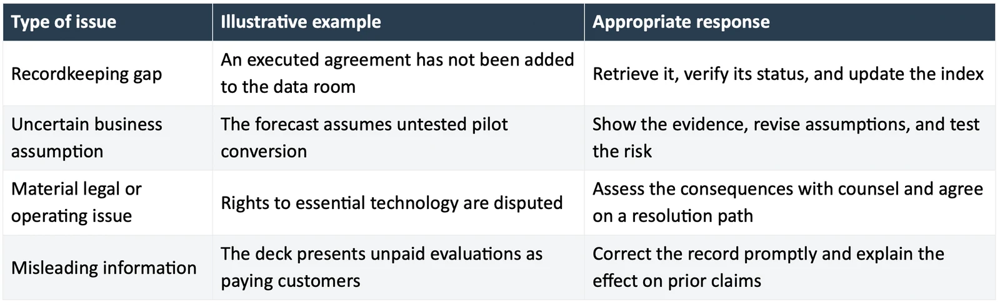

Startup due diligence red flags are discrepancies, unsupported claims, or unresolved risks that cause an investor to question the business or the proposed financing. They can arise in commercial evidence, financial records, ownership, technology rights, team commitments, or the way management responds to questions.
A red flag does not automatically end a financing. Its significance depends on the issue, the potential consequences, and whether the company gives a credible account of the facts. A missing record may be recoverable. A business-model weakness may need new evidence. Deliberately misleading information creates a different problem.
This guide explains ten issues founders should examine before a seed round and practical ways to address them. The examples are hypothetical. Legal and accounting questions should be resolved with advisers familiar with the company and jurisdiction.
How to assess the significance of a red flag
Before trying to fix an issue, ask what it changes about the investment decision. Does it affect the economics, ownership, ability to operate, feasibility of closing, or confidence in management's account?

This classification is a suggested preparation method, not a universal investor scoring system. An apparently small document gap can reveal a material underlying issue, so investigate before assigning a label.
1. The traction claim does not match the underlying records
An investor sees strong customer growth in the deck, then finds that the supporting schedule combines paid customers, free users, trials, and prospects. The immediate question becomes which category supports the claimed business progress.
The same issue appears when a company labels contracted value as revenue or includes one-time fees in recurring revenue. Andreessen Horowitz's startup metrics guide explains why these distinctions matter. Give every important metric a definition and reporting period.
How to address it: Reconcile the deck with the customer schedule and financial records. Separate the categories, correct the labels, and explain any material change to people who received the earlier figures. If the treatment is an accounting question, have the finance adviser confirm it.
An illustrative company with six paying customers and nine free pilots should report those groups separately. It can still explain why the pilots are promising, with the conversion assumptions visible.
2. The forecast depends on outcomes the company cannot support
A model may assume each pilot converts, every hire starts on time, and customer payments arrive immediately. The spreadsheet can be internally consistent while its operating assumptions remain weak.
The concern is the gap between the plan and the evidence. If every favorable event must occur for the company to reach its milestone, the funding requirement may be understated.
How to address it: Identify the assumptions with the greatest effect on cash and progress. Build a downside case around realistic delays and conversion outcomes. Explain which operating decisions change under that scenario.
For an illustrative example, delaying four expected enterprise deployments by one quarter could move receipts beyond a payroll deadline. The response should specify the resulting cash gap and available actions. Changing the chart's growth curve alone does not solve it.
3. The cap table cannot be reconciled
Ownership information becomes difficult to rely on when different versions show different allocations, financing instruments are missing, or an informal equity promise has never been resolved.
The investor needs to understand the current ownership and how the proposed financing affects it. The founders also need that understanding before agreeing to the transaction.
How to address it: Compare the cap table with executed agreements and relevant approvals. Ask counsel to review discrepancies, undocumented arrangements, and unclear rights. Model outstanding instruments using their actual terms.
Cooley GO's preparation guidance advises founders to understand capitalization and document equity arrangements. A tidy spreadsheet is useful only when it reflects the underlying position.
4. Rights to core technology are unclear
A startup may depend on software, research, designs, or data developed by someone outside the current team. If the company cannot explain its rights to use and commercialize those assets, an investor cannot easily assess what it is financing.
Cooley GO's explanation of IP assignment describes how ownership can transfer through an agreement. Ownership and licensing are different arrangements, and either may require careful review.
How to address it: Map the essential assets, their creators or owners, the relevant agreements, and any restrictions. Have counsel determine whether the current rights support the business plan and what must be corrected.
For an illustrative case, a company licenses university research but plans to sell into a field outside the license's scope. The issue requires a review of the rights and commercial plan. A stronger IP slide cannot answer it.
5. Customer concentration is hidden by aggregate growth
Growth can look encouraging while a large share of revenue depends on one customer, one channel partner, or a related party. Concentration is not unusual in young companies, but it changes the risk an investor is evaluating.
How to address it: Show concentration clearly, explain the relationship, and describe the relevant contract and renewal conditions. Model the effect of losing or delaying the largest account. Distinguish related-party transactions from independent customer demand.
Imagine the largest customer contributes $30,000 of a company's $50,000 in monthly revenue. That customer accounts for 60 percent. Losing it would have a materially different effect from losing one of ten similarly sized accounts. Present the dependence and explain the plan for reducing it.
6. Product claims exceed the evidence
A company may describe a prototype as production-ready, a controlled test as broad validation, or a planned capability as available functionality. In a technical business, those distinctions can change the development risk substantially.
How to address it: Separate what has been built, what has been tested, and what remains planned. Describe test conditions and limitations. For claims involving regulatory status, use the precise status and obtain appropriate specialist review.
An illustrative product that performs well with a manually curated dataset has shown something useful. It has not necessarily demonstrated reliable performance with messy customer data. Explain the next test needed to establish that capability.
The investment readiness assessment can help identify where claims have outpaced supporting evidence.
7. Team commitments and decision rights are ambiguous
An investor may discover that a supposed full-time executive is an occasional adviser, a critical hire has not accepted an offer, or the founders disagree about who can make operating decisions.
The concern is execution capacity. A small team with clear commitments can be easier to evaluate than a larger team described inaccurately.
How to address it: State each person's current role and commitment. Separate advisers from operators and intended hires from confirmed ones. Resolve material disagreements about responsibilities and financing plans before representing a unified position to investors.
Avoid treating a title as evidence that the work is covered. Explain who will perform the next phase of product development, customer acquisition, and financial management, including gaps and the budget to address them.
8. Material obligations or disputes appear late
Unpaid obligations, guarantees, unusual commitments, or disputes can change the company's financial position and the transaction analysis. Late discovery is especially damaging when the matter contradicts an earlier answer.
How to address it: Ask finance, commercial, product, and legal owners to review their records for matters relevant to the financing. Confirm the facts and discuss disclosure with counsel.
Where transaction documents require representations and disclosures, Cooley GO's disclosure schedule guide explains how schedules qualify statements and supply requested information. Keep the transaction-specific disclosures current. Do not assume that mentioning an issue casually in a meeting satisfies the agreement's requirements.
9. Diligence answers change without explanation
The founder gives one customer count, the finance model shows another, and a colleague later provides a third. Sometimes the explanation is an innocent difference in dates or definitions. Without that explanation, the reviewer cannot tell which answer to rely on.
Repeated unexplained changes can expand the review because each new answer creates another verification task.
How to address it: Establish the source and reference date for key figures. Keep a central question log and an owner for each response. If an answer changes, explain the change and its effect on previously shared information.
Use the seed round data room checklist to organize current files and distinguish them from superseded versions. Tell reviewers where the authoritative answer sits.
10. The proposed round does not reach a meaningful milestone
An investor may agree that the company needs money while questioning whether the amount will create enough progress. A budget that funds activity without demonstrating a change in the business leaves the next financing case unclear.
How to address it: Define the milestone first, then work back to the cost and dependencies. Explain the evidence you expect to produce and how you will respond if it is weaker than planned.
Y Combinator's seed fundraising guide links the amount raised to a credible plan. Apply that principle to the company's actual development cycle. A fixed runway convention cannot establish that a complex technical or commercial milestone is adequately financed.
A practical remediation plan
Create a register with five fields: issue, potential consequence, supporting facts, accountable owner, and next decision or action. Add a target date where the work can reasonably be scheduled.
Prioritize issues that could affect legality, ownership, operational continuity, or the accuracy of material statements. Then address the business assumptions that most affect the investment case. Complete smaller recordkeeping improvements alongside that work.
An illustrative register entry might read: two customer pilots were included in the paid-customer count; the commercial claim is overstated; the sales owner will confirm the records today; the founder will circulate the corrected count and explanation to current diligence participants.
Some risks cannot be eliminated before funding. In those cases, explain the residual risk and the plan for managing it. An investor can make an informed decision only when the remaining uncertainty is visible.
Frequently asked questions
Which red flags can stop a seed investment
There is no universal list. Issues involving misleading information, disputed ownership, missing rights to essential assets, or serious unresolved legal problems can be especially consequential. Their effect depends on the facts, available remedies, and investor judgment.
Is a messy cap table always a deal breaker
No. Some discrepancies can be corrected with supporting records and appropriate legal work. A material ownership dispute or an arrangement that cannot be reconciled may be more difficult. Determine the underlying issue before describing it as a formatting problem.
Should founders disclose weaknesses before investors ask
Material matters should be addressed accurately and at an appropriate stage, with counsel advising on legal disclosures. Prepare a clear explanation of the facts, consequences, and response. Avoid creating a misleading impression through omission or selective presentation.
Can strong growth compensate for diligence problems
Growth can make an opportunity attractive, but it does not resolve questions about accurate reporting, ownership, or legal rights. Evaluate each issue on its consequences. Do not assume investors will overlook it because a headline metric is strong.
How can founders prepare for due diligence efficiently
Start with the claims and risks most likely to change the investment decision. Reconcile the evidence, assign owners to material gaps, and maintain a clear record of responses. Use the transaction readiness checklist to coordinate the work.
Address the questions behind the red flags
The useful outcome of preparation is a company that can explain its evidence and its risks clearly. MatchPlay supports founder preparation, due diligence, and investor matching. Apply to MatchPlay to begin its review process.